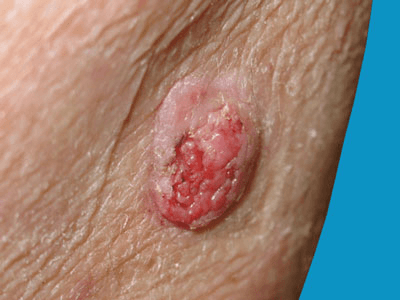

There are two main categories of skin cancer: melanomas and non-melanoma skin cancers. Squamous cell carcinoma is one of the non-melanoma skin cancers. It is the second most common type of skin cancer in the UK.

Yes, squamous cell carcinomas can be cured if they are detected early. But if they are left untreated for too long, a few may spread to other parts of the body, and this can be serious and painfull.